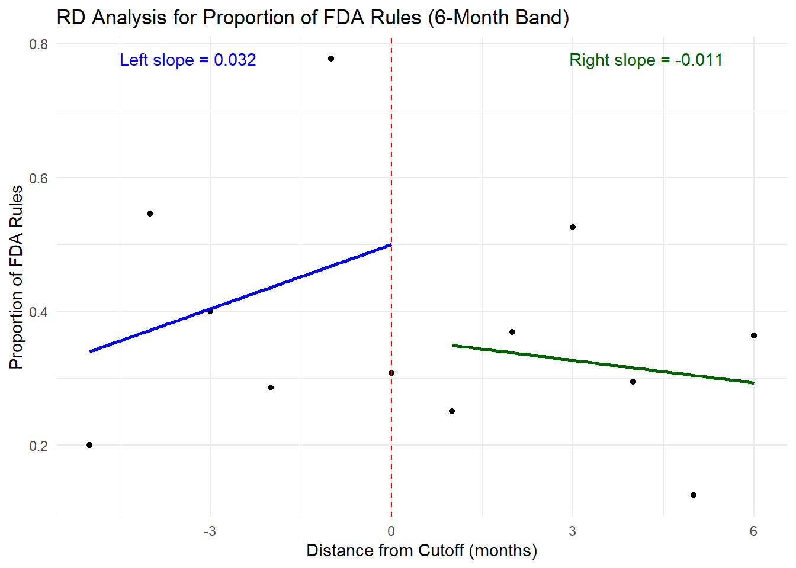

## Compute slopes from the unified_yearly data for each outcome
# Slope for Total Rules
slope_rules <- round(coef(lm(total_rules ~ year, data = unified_yearly))[2], 3)
# Slope for Total Guidance Documents
slope_guidance <- round(coef(lm(total_guidance ~ year, data = unified_yearly))[2], 3)
# Slope for Total Documents
slope_total <- round(coef(lm(total_documents ~ year, data = unified_yearly))[2], 3)
# Slope for Proportion of FDA Rules
slope_prop <- round(coef(lm(proportion_rules ~ year, data = unified_yearly))[2], 3)
loess_span <- .6 # 0.8 is Stata’s default; smaller = wigglier curve
loess_cols <- c("steelblue", "darkred") # raw line + points colours
smooth_col <- "steelblue" # colour for the lowess curve
pt_col <- "darkred"
smooth_col <- "steelblue"
trend_col <- "black"
trend_lt <- "dotted" # line type for the global trend
ann_x <- min(unified_yearly$year) + 10 # x-position for slope labelDataWatch
Deck
The U.S. Food and Drug Administration (FDA) has experienced significant shifts in its regulatory approach over the past two decades. This study examines trends in regulatory output from 2000 to 2024 by analyzing two key data sources: formal rules published in the Federal Register and guidance documents available on the FDA website. Formal rules represent the traditional, legally binding regulatory actions, whereas guidance documents offer more flexible policy direction without undergoing the complete notice-and-comment process. By merging these datasets into a unified monthly series and applying regression discontinuity and interrupted time series analyses, we explore how judicial decisions and administrative changes have reshaped the FDA’s reliance on formal versus informal regulatory mechanisms. Our investigation provides insights into evolving regulatory strategies and their implications for policy implementation and transparency. Our regression analyses indicate that for each month away from the cutoff, formal FDA rules decline by about 0.033 units and the proportion of rules among all regulatory documents decreases by roughly 0.2 percentage points. Although guidance documents increase by approximately 0.02 units per month, this modest rise does not fully counterbalance the falling trend in formal rulemaking, resulting in a net decline in overall regulatory output.
Intro
Our analysis reveals four key findings about FDA regulatory output over the past twenty-four years. First, there is a striking decrease in the proportion of formal rules relative to total regulatory documents, suggesting a significant strategic shift away from traditional rulemaking. Second, the annual count of formal FDA rules has steadily declined, highlighting a reduced reliance on conventional regulatory processes. Third, there has been a notable increase in the issuance of guidance documents, indicating a growing preference for more flexible regulatory tools. Finally, despite the rise in guidance documents, the net total of regulatory documents has declined, implying that the increase in guidance has not fully offset the reduction in formal rulemaking. These trends underscore a complex evolution in FDA regulatory practices.
Data Sources and Methods
The analysis draws on two primary data sources. Data on formal rules were obtained from the Federal Register, which is the official publication for federal agency rulemaking. This source provides a comprehensive record of all rules and regulations published by federal agencies. In parallel, information on FDA guidance documents was extracted from the FDA webpage’s guidance document database. These complementary databases enable a comparison between formal rulemaking and the alternative, less formal guidance approach.
For the period spanning 2000 to 2024, the rule and guidance datasets were cleaned and merged into a unified monthly dataset. This dataset includes counts of rules and guidance documents, the total number of documents, and the calculated proportion of rules to total documents for each month. Missing data points were filled with zeros to ensure a complete and consistent time series. This unified dataset served as the basis for further analysis, including regression discontinuity (RD) and interrupted time series (ITS) models, which assess the impact of key policy changes—specifically the FDA guidance and rulemaking adjustments following landmark judicial decisions in 2024.
Running Code
Graph 1: Striking Decrease in the Proportion of FDA Rules to Total Documents Over Time
Graph 1 demonstrates a clear, steady decline in the proportion of FDA rules relative to the total regulatory documents (rules plus guidance) from 2000 to 2024. This downward trend highlights a marked shift in regulatory practice, with the FDA increasingly favoring less formal instruments over traditional rulemaking. These findings underscore the possibility that legal, administrative, and political factors are driving the agency toward more flexible, expedient regulatory approaches.
`geom_smooth()` using formula = 'y ~ x'
`geom_smooth()` using formula = 'y ~ x'-1.png)
Graph 2: Decrease in Total FDA Rules Published Each Year
Graph 2 depicts a persistent decline in the number of formal FDA rules issued annually from 2000 to 2024. This consistent reduction in rule output suggests that the agency is steadily moving away from the traditional, formal rulemaking process. Contributing factors may include increasing administrative burdens, greater legal scrutiny, and a strategic pivot toward alternative regulatory mechanisms such as guidance documents. As the number of formal rules falls, the overall impact of traditional regulatory measures may be reduced, potentially affecting regulatory consistency and transparency.
`geom_smooth()` using formula = 'y ~ x'
`geom_smooth()` using formula = 'y ~ x'
Graph 3: Increase in the Number of FDA Guidance Documents Published Each Year
Graph 3 illustrates a marked upward trend in the publication of FDA guidance documents from 2000 to 2024. As formal rulemaking has declined, the FDA appears to be increasingly relying on guidance documents to communicate policy and regulatory expectations. These documents offer a more flexible and less cumbersome alternative to formal rules, allowing the agency to respond more swiftly to emerging challenges. The graph highlights a strategic shift towards alternative regulatory instruments and suggests that the FDA is adapting its regulatory toolkit to better meet contemporary challenges.
`geom_smooth()` using formula = 'y ~ x'
`geom_smooth()` using formula = 'y ~ x'-1.png)
Graph 4: Net Decline in Total FDA Regulatory Documents Published Each Year
Graph 4 presents the combined total of FDA regulatory documents, including both formal rules and guidance documents, from 2000 to 2024. Despite the increase in guidance documents, the overall output has declined, indicating that the reduction in formal rulemaking has not been completely offset. This net decline reflects a more restrained overall approach to regulation by the FDA, possibly driven by heightened legal constraints and evolving administrative priorities. The downward trend in total regulatory output raises important questions about the effectiveness of policy implementation in a changing legal and political environment. It highlights the complex interplay between judicial pressures and agency strategy in the modern regulatory landscape.
`geom_smooth()` using formula = 'y ~ x'
`geom_smooth()` using formula = 'y ~ x'-1.png)
Appendix
Interrupted Time Series Results
Notes:
Look at another dataset or report that verifies report
This is extenal inconsistency, also look at internal inconsistency.
Change to monthly and then smooth the series
If the monthly process were perfectly linear and seasonality were flat, you would expect β_year ≈ 12 × β_month.
Please cite as: Hlavac, Marek (2022). stargazer: Well-Formatted Regression and Summary Statistics Tables. R package version 5.2.3. https://CRAN.R-project.org/package=stargazer
RD Models for FDA Rules
=====================================================================
Dependent variable:
--------------------------------------------------
Rules
Dist. Only Dist. + Crtls Treatment x Dist + Ctrls)
(1) (2) (3)
---------------------------------------------------------------------
treatment 7.018
(4.377)
distance -0.031*** -0.032*** -0.033***
(0.003) (0.003) (0.003)
month.L 0.530 0.500
(0.939) (0.940)
month.Q 0.386 0.570
(0.940) (0.945)
month.C 3.002*** 3.129***
(0.925) (0.929)
month4 -0.009 -0.047
(0.917) (0.916)
month5 1.938** 1.829**
(0.920) (0.920)
month6 1.022 1.049
(0.920) (0.919)
month7 -2.337** -2.255**
(0.918) (0.918)
month8 2.046** 2.040**
(0.917) (0.916)
month9 -1.479 -1.555*
(0.918) (0.918)
month10 0.590 0.584
(0.918) (0.917)
month11 -0.376 -0.305
(0.917) (0.917)
transition 1.138 0.956
(1.044) (1.111)
D 0.321 0.284
(0.572) (0.572)
treatment:distance -1.288
(1.137)
Constant 4.063*** 3.662*** 3.523***
(0.529) (0.707) (0.713)
---------------------------------------------------------------------
Observations 300 300 300
R2 0.247 0.324 0.331
Adjusted R2 0.244 0.291 0.293
=====================================================================
Note: *p<0.1; **p<0.05; ***p<0.01
RD Models for FDA Guidance Documents
=====================================================================
Dependent variable:
--------------------------------------------------
Guidance
Dist. Only Dist. + Crtls Treatment x Dist + Ctrls)
(1) (2) (3)
---------------------------------------------------------------------
treatment 6.933
(6.753)
distance 0.018*** 0.021*** 0.020***
(0.005) (0.005) (0.005)
month.L 3.164** 3.155**
(1.445) (1.450)
month.Q -0.077 0.100
(1.445) (1.457)
month.C -0.039 0.100
(1.423) (1.434)
month4 -1.842 -1.880
(1.411) (1.414)
month5 -1.689 -1.787
(1.414) (1.420)
month6 -1.003 -0.984
(1.415) (1.418)
month7 -1.956 -1.880
(1.411) (1.416)
month8 0.221 0.213
(1.410) (1.412)
month9 -1.312 -1.380
(1.412) (1.416)
month10 -0.446 -0.444
(1.412) (1.415)
month11 -0.549 -0.476
(1.411) (1.415)
transition 0.589 0.541
(1.605) (1.714)
D -1.202 -1.230
(0.880) (0.883)
treatment:distance -1.455
(1.754)
Constant 8.470*** 9.346*** 9.236***
(0.789) (1.087) (1.099)
---------------------------------------------------------------------
Observations 300 300 300
R2 0.049 0.095 0.098
Adjusted R2 0.046 0.050 0.047
=====================================================================
Note: *p<0.1; **p<0.05; ***p<0.01
RD Models for Total Documents
=====================================================================
Dependent variable:
--------------------------------------------------
Total Documents
Dist. Only Dist. + Crtls Treatment x Dist + Ctrls)
(1) (2) (3)
---------------------------------------------------------------------
treatment 13.950
(8.478)
distance -0.013** -0.012* -0.013**
(0.006) (0.006) (0.007)
month.L 3.694** 3.655**
(1.819) (1.821)
month.Q 0.309 0.670
(1.820) (1.830)
month.C 2.963* 3.230*
(1.792) (1.800)
month4 -1.851 -1.927
(1.777) (1.775)
month5 0.250 0.043
(1.781) (1.783)
month6 0.018 0.065
(1.782) (1.780)
month7 -4.293** -4.135**
(1.778) (1.777)
month8 2.266 2.253
(1.776) (1.773)
month9 -2.791 -2.934*
(1.778) (1.778)
month10 0.144 0.140
(1.779) (1.777)
month11 -0.926 -0.781
(1.777) (1.776)
transition 1.727 1.496
(2.022) (2.152)
D -0.881 -0.946
(1.108) (1.108)
treatment:distance -2.743
(2.201)
Constant 12.533*** 13.008*** 12.759***
(1.004) (1.369) (1.380)
---------------------------------------------------------------------
Observations 300 300 300
R2 0.015 0.081 0.090
Adjusted R2 0.012 0.036 0.039
=====================================================================
Note: *p<0.1; **p<0.05; ***p<0.01
RD Models for Proportion of FDA Rules
=====================================================================
Dependent variable:
--------------------------------------------------
Proportion
Dist. Only Dist. + Crtls Treatment x Dist + Ctrls)
(1) (2) (3)
---------------------------------------------------------------------
treatment 0.052
(0.189)
distance -0.002*** -0.002*** -0.002***
(0.0001) (0.0001) (0.0001)
month.L -0.081** -0.080**
(0.040) (0.040)
month.Q 0.047 0.048
(0.040) (0.041)
month.C 0.090** 0.091**
(0.040) (0.040)
month4 0.005 0.005
(0.039) (0.039)
month5 0.062 0.062
(0.039) (0.040)
month6 0.033 0.033
(0.039) (0.040)
month7 0.013 0.013
(0.039) (0.040)
month8 -0.012 -0.012
(0.039) (0.039)
month9 -0.016 -0.017
(0.039) (0.040)
month10 0.025 0.025
(0.039) (0.040)
month11 -0.015 -0.015
(0.039) (0.040)
transition -0.021 -0.020
(0.045) (0.048)
D 0.047* 0.047*
(0.025) (0.025)
treatment:distance -0.012
(0.049)
Constant 0.347*** 0.311*** 0.311***
(0.022) (0.030) (0.031)
---------------------------------------------------------------------
Observations 300 300 300
R2 0.365 0.406 0.406
Adjusted R2 0.363 0.377 0.373
=====================================================================
Note: *p<0.1; **p<0.05; ***p<0.01
Interrupted Time Series Analysis Results
======================================================================================
Dependent variable:
-------------------------------------------------------------------
Rules Guidance Total Proportion
(1) (2) (3) (4)
--------------------------------------------------------------------------------------
treatment 7.018 6.933 13.950 0.052
(4.377) (6.753) (8.478) (0.189)
distance -0.033*** 0.020*** -0.013** -0.002***
(0.003) (0.005) (0.007) (0.0001)
transition 0.956 0.541 1.496 -0.020
(1.111) (1.714) (2.152) (0.048)
D 0.284 -1.230 -0.946 0.047*
(0.572) (0.883) (1.108) (0.025)
treatment:distance -1.288 -1.455 -2.743 -0.012
(1.137) (1.754) (2.201) (0.049)
--------------------------------------------------------------------------------------
Observations 300 300 300 300
R2 0.331 0.098 0.090 0.406
Adjusted R2 0.293 0.047 0.039 0.373
======================================================================================
Note: *p<0.1; **p<0.05; ***p<0.01
Standard errors are reported in parentheses below the estimates.The results show clear and contrasting trends across the four dependent variables. In the model for formal FDA rules, the distance variable is significantly negative (–0.033, p<0.01), indicating that for each additional month from the cutoff, the average number of published rules declines. In contrast, the guidance documents model features a significantly positive distance effect (0.020, p<0.01), suggesting that as time from the cutoff increases, the issuance of guidance documents rises. For the total number of documents (the sum of rules and guidance), the distance effect remains negative but is smaller in magnitude (–0.013, p<0.05). The proportion model further confirms that the share of formal rules falls over time, with a significant decrease of 0.002 (p<0.01) per month. The constant estimates in all models are highly significant, and the models for rules and proportion explain a moderate share of the variance (adjusted R² of 0.293 and 0.373, respectively), while those for guidance and total documents show more modest explanatory power.
The analysis also controls for broader contextual factors. The presidential transition indicator is not statistically significant in any specification, suggesting that the designated transition months do not, by themselves, account for the observed trends. However, the Democratic party indicator (D) is significant in the proportion model (0.047, p<0.1), implying that during years under a Democratic president, the proportion of formal rules is modestly higher. Additionally, the interaction term between treatment and distance is consistently negative, though not statistically significant across the models, hinting at some attenuation of the distance effect in the treatment period. Overall, the findings point to a clear shift away from formal rulemaking over time, with an increase in guidance documents that, however, does not fully offset the decline in total regulatory output.
Appendix - RD of Proportion of rules
We ran an RD regression but saw no significant short-term effects of Loper Bright and Ohio v. EPA on rulemaking output.
`geom_smooth()` using formula = 'y ~ x'
`geom_smooth()` using formula = 'y ~ x'
#reality check
# ‘Year’ model (annual totals)
beta_year <- coef(lm(total_rules ~ year, data = unified_yearly))[2]
beta_year year
-4.503846 # [1] -4.50 (≈ rules per *calendar* year)
# Make an “average-monthly” outcome for the same regression
unified_yearly <- unified_yearly %>%
mutate(avg_monthly_rules = total_rules / 12)
coef(lm(avg_monthly_rules ~ year, unified_yearly))[2] year
-0.3753205 # ≈ -0.375 (-0.375 ≈ -4.50 / 12)
# Now create a pure month-index that rises 1,2,3,… from Jan-2000 to Dec-2024
unified_data <- unified_data %>%
mutate(month_index = 1:n())
coef(lm(rules ~ month_index, unified_data))[2]month_index
-0.03117835 # ≈ -0.375 (matches the annualised decline)